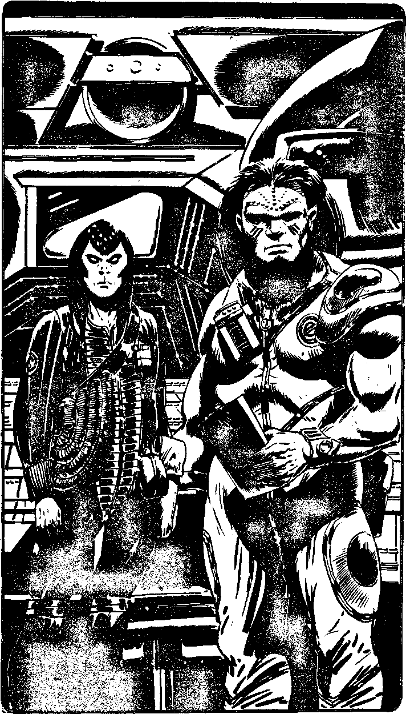

244
You walk on up the corridor, further into the Dome, McReady commentating as you go. You pass several doors on the left and right, the crew's cabins. Then he shows you into a brightly lit room with many precision instruments and worktops. A primitive Autodoc lies in one corner. Tsu Tsang is working in there and she nods as you come in. 'This is the lab,' says McReady. 'A really ultra place. Old Tsu is testing a titanium sample no doubt. Bet you're sick of the stuff, eh, Tsu?' Tsu Tsang smiles weakly and works on. Leaving the lab, you are led on down the corridor. It opens out on the right into a large floorspace crammed with industrial machinery, and the corridor continues on beyond it. Then it branches off into three. 'Down there is where we store the titanium. Pretty non-ultra sight,' says McReady, pointing to the left-hand corridor. 'Down to the right are the generators, life support and that. Pretty ultra-less as well. But straight ahead is the Mine Control, ultra man!' and he leads you down it. It opens into a large room, lined with complex instrument banks, computers and so on, making your console in Falcon's Wing look like a toy. In one corner you can see a large personal lift, presumably leading down into the mine itself. Two men are seated at the console boards, running the automated mining operation. 'Our Minetechs,' says McReady. 'Hey guys, meet our newcomer.' They look around, eyes widening in surprise. One of them is a Siriun like Yelov, tall and lithe, with long brown hair and golden cat-like eyes. He carries himself as if he were thoroughly bored with mining. McReady introduces him as Kepy Achov. The other is built like a tank, about seven foot tall, bull-necked and bearded. His name is Caleb. McReady tells you he is from Proxima Centauri, a high gravity planet, which accounts for his size. They ask how you got here and you chat to them for a while, making your story sound convincing. Half an hour later, you are back in your cabin, pondering on how you can get hold of the last piece of the Rack without causing any disturbances in the timelines when you hear a commotion outside. Turn to 365.